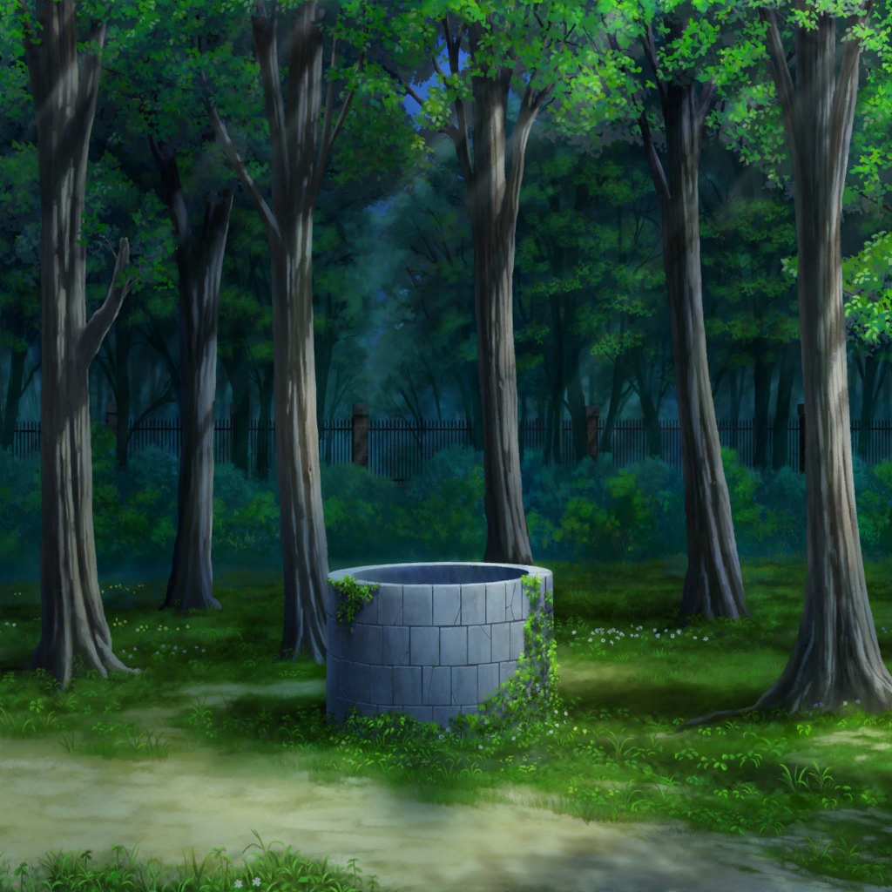

羽丘女子学園 井戸
薫
井戸の周りには誰もいないようだね
リサ
そ、それじゃ井戸の中はどうですか？
薫
遠目に見た感じでは異変なさそうだ。
うん、きっと何もないんじゃないかな
蘭
いや、ちゃんと中をのぞいてみないと……
薫
その必要はないさ。
中に誰かが入っていたら、身体がはみ出してるはずだよ
薫
リサもそう思うだろう？
リサ
ごめん、アタシ、こっから先には絶対行かないから！
薫
え……？
リサ
もう絶対ムリだから！ 井戸とかのぞけないから！
だから、ヒナ、薫、井戸の中見てきて……！
薫
え……！？
日菜
あたしはさっき見たからもういいや。薫くんが見なよ
薫
何を言っているんだい、日菜……
薫
さっと行って、のぞきこむだけだろう？
花の香りを嗅ぐくらい、とても簡単なことじゃないか
日菜
うん、だから薫くんが見てきたらいいんじゃない？
蘭
あたしもムリです。お願いします
リサ
お願い、薫〜！ 今度、クッキーあげるから！
薫
…………！
薫
……おや、こんなところに花が咲いているよ。
日の当たらない場所でも力強く咲くんだね……
蘭
なんで急に花の話を……？
リサ
うん、そうだね。わかったから、早く井戸を……
薫
ああ、井戸のことはもちろんわかっているさ
薫
でもほら、耳をすますと鳥のさえずりが聞こえてくる。
なんという鳥なのか気になってしまって……
日菜
スズメじゃない？
薫
そうだね、スズメだね……
蘭・リサ
じーーーっ
薫
……わかったよ。
かわいい子猫ちゃん達のお願いだ、見てこよう
日菜
……薫くん、なんか歩くの遅くない？
蘭
そんな狭い歩幅で歩く人、初めて見た……
リサ
早く見てきてよ、薫〜！
薫
そんなに慌てる必要はないよ。井戸は逃げやしないさ
リサ
ここにあんまりいたくないんだってば〜！
今にも何か出てきそうだし！
薫
何かって、そんなもの出るわけ……
？？？
みなさーん……！
薫・リサ・蘭
！！！！！
リサ・蘭
わあああああああああ！！！！！
蘭
出たーー！！
リサ
来ないで来ないで！！
麻弥
いやいや！ ジブンですってば！
リサ
……へ？ 麻弥？
蘭
井戸の幽霊が出てきたんだと思った……
麻弥
勝手に人を幽霊にしないでくださいよ〜！
ばっちり生きてますから！
蘭
だって、なんか濡れてるし……
日菜
ホントだ。どうしたの、水でもかぶっちゃった？
麻弥
はい、部室の掃除の手伝いをしてる時に、
水の入ったバケツにつまずいてしまって……
日菜
そ、そうなんだ。風邪ひかないようにね
麻弥
タオルを貸してもらって拭いたので、大丈夫だと思います……
リサ
はあ、驚かさないでよ〜……
麻弥
ジブン、普通に声をかけただけだと思うんですが……
薫
フフ、みんな、怖がりな子猫ちゃんだね
蘭
？ なんで瀬田さん、そんな遠くにいるんですか？
薫
……さあ、どうしてだろうね。私も不思議だよ
日菜
というか、リサちーと蘭ちゃんと一緒に逃げてなかった？
薫
ハハハ……そんなわけないじゃないか。
２人を守ろうと思って、自然と身体が動いただけだよ、うん
日菜
あ、そっか。薫くんらしいねー
薫
ハハハ……
蘭
麻弥さん、随分時間かかってましたね。電話にも出なかったし
麻弥
電話？ ああ、すみません！ 気づかなくて！
麻弥
時間がかかったのは、あることを調べてたからなんです
日菜
あること……？
麻弥
わかったんですよ、井戸の謎が……！